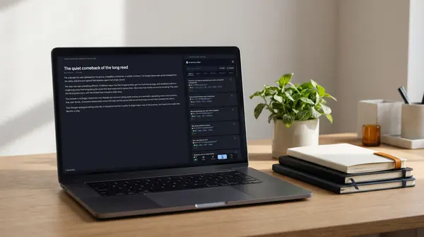

摘要網頁精華。
留下真正重要的內容。
一鍵將任何網頁轉為文章旁的精簡摘要。所有內容皆保留在您的瀏覽器中，方便隨時再次查閱。
手機版 Chrome 無法安裝擴充功能。請將連結傳送到您的電腦，並在電腦上完成安裝。 寄到我的電子郵件 · 複製連結
在 Product Hunt 獲得 139 票支持 · 開源 · 歐盟製造
- 閱讀任何網頁。照常打開文章閱讀，AISH 在瀏覽器中安靜待命。
- 文章旁即時呈現摘要。只需一鍵點擊，側邊欄即會逐字生成精簡摘要，完全不干擾閱讀節奏。
- 向網頁提問。深入追問的回答均會精準標註原文出處段落。
- 切換你的偏好語言。以你選擇的語言生成摘要，並建立已讀內容的知識圖譜。
摘要與文章並排顯示
快速瀏覽重點概覽、隨時追問細節，並精準定位答案出處。2.2 版真實介面展示。
20 秒快速掌握每項功能
擴充功能實機操作短片。點選一部即可連續滑動觀看。
閱讀清單本該擁有的理想模樣
隨手儲存、迅速掌握、精準回找，更能真正重溫閱讀 — 不必再被另一個訂閱服務綁架你的知識庫。
這才是閱讀清單一開始就該有的模樣。
內建 RSS 閱讀器
追蹤各大部落格與新聞網站，依來源、標籤、日期或情緒進行篩選，支援匯入 OPML，並能一鍵開啟或產生任何內容的摘要。直接在擴充功能內播放 Podcast，還可自由選擇由 AI 為你彙整每日頭條摘要。收藏的內容將自動歸檔，所有訂閱資料皆安全儲存於你的本機裝置。
YouTube 影片：直接解析字幕
打開影片即可產生摘要。擴充功能會自動讀取字幕、以你的語言整理核心要點，後續追問也能標註出處段落。
PDF 檔案，就像普通網頁一樣輕鬆閱讀
在瀏覽器中直接開啟或由本機上傳 PDF，就能像一般網頁般快速摘要。「使用明細」清晰顯示讀取的字數、Token 數與使用模型。
AI 智慧摘要，自由選擇模型
支援 OpenAI、Gemini、Mistral、DeepSeek 或自訂端點——或是直接指定本機 Ollama 模型，整個過程完全無需透過外網連線。
幽靈高亮標註，直接呈現在網頁上
AI 會高亮標註文章中的 最關鍵的原文段落 —— 讓你能 一眼掌握核心重點，並隨摘要一同匯出至 Kindle、LocalSend 或 Markdown。
研究模式：透過 DOI 自動辨識論文
根據 DOI 與引用中繼資料精準辨識學術論文，並標示為臨床試驗、綜述或預印本。研究架構、樣本與限制一併條列，引用資料更直接來自 DOI 官方登記庫，而非 AI 憑空生成。
針對同一問題，跨來源比對
將儲存的文章彙整為集合，自訂來源類型（同儕審查、預印本、新聞、評論），啟動側向閱讀檢驗，讓 AI 自動比對摘要：抓出共識、衝突與被遺漏的觀點。
即時朗讀：邊生成邊聆聽
摘要生成的同時立即語音朗讀：先讀標題，接著逐句播放，支援暫停、靜音與語速調節。日後也能隨時在任一卡片重新收聽。
真正的本機端全文搜尋
涵蓋標題、標籤與文章內容的全文搜尋 — 由瀏覽器內建的 TF-IDF 索引驅動。零延遲、無網路往返，資料絕不上傳。
超越清單的知識圖譜
視覺化呈現已存文章之間的關聯 — 透過共同標籤，甚至在沒有相同標籤時根據主題相似度建立連結。
有目標地稍後閱讀
為「決策」標記原因與時限並接收提醒 — 告別塞進收藏夾後就再也沒打開過的窘境。
智慧挑選的專屬文摘
一鍵為你精選多樣化且不重複的已存內容 — 避免連續讀到同個話題的五個版本 — 並打包成單一檔案傳送至 Kindle 或 LocalSend。
新聞情緒過濾與長期趨勢
AI 會將新聞標題從沉重到正面進行評級。一鍵篩選只看正向消息，並以日、週、月為單位追蹤自己的閱讀情緒光譜。
在 Claude、LM Studio 與 Cursor 中直接取用你的庫藏
在「設定」中啟用 AI 應用程式，即可讓電腦上的 Claude Desktop、LM Studio、Cursor 及其他 MCP 應用程式搜尋你的庫藏、引用劃線重點並列出待讀清單。經你授權後，它們還能為你儲存連結。資料全程不經過我們的伺服器，且由你完全掌控它們能讀取的內容。
你的知識庫儲存在專屬儲存空間，全程加密
將資料庫同步並備份至你自己的 Nextcloud、WebDAV 伺服器、S3 bucket 或電腦上的資料夾。所有內容皆在瀏覽器端預先加密，伺服器端只能看到加密後的亂碼檔案。你也可以將清單發布到自己的網站，並附帶搜尋、標籤圖譜與 3D 地圖。在手動設定前此功能完全關閉；我們不架設任何同步伺服器，也無法窺探你的任何資料。 如何設定 · 為何重要
在任何網頁上新增筆記與評論
選取文字即可自由選擇：畫重點標記、留下評論，或連同引文儲存為筆記。所有內容都會彙整至「筆記」分頁，能以清單或便利貼網格檢視，依文章或標籤整理，並與知識庫的其他內容即時同步。
匯出至 Obsidian、Markdown、Word 與 PDF
直接將摘要傳送至你的 Obsidian 庫（vault），或匯出為 Markdown、Word (DOCX)、OpenDocument 或 PDF 格式，將標題、來源、標籤與劃線重點整合在同一篇筆記中。
專屬的閱讀分析報告
根據你的個人庫藏資料，統計連續閱讀天數、摘要節省的時間、活躍度、每週主題分佈以及文字雲。
你存下來的內容，永遠比讀得完的還要多
我們儲存的內容大多很少再次翻閱。「摘要精選（Digest）」為你挑選 5 篇典藏內容，並傳送至裝置供離線閱讀。
1. 點擊文摘（Digest）
精選 5 篇典藏，兼顧時效性與內容多元度。
2. 隨心設定閱讀氛圍
輕鬆、客觀或深入：依照你的心情隨心挑選。
3. 傳送至離線裝置
一鍵打包傳送至 Kindle 或同區域網路內的裝置，通勤或搭機隨時離線閱讀。
在手機分享連結，在電腦閱讀摘要
AISH Companion 會在手機的分享選單中加入「AISH」。連結將以端對端加密傳送至你的瀏覽器，並儲存在「歷史記錄」中，輕點一下即可產生摘要。
1. 一次性配對
從「設定」→「手機收件匣」掃描 QR code，無需註冊帳號。
2. 從任何應用程式分享
在任何應用程式中點擊「分享」→「AISH」。支援離線操作：重新連線後將自動發送。
3. 點擊「產生摘要」
連結會暫存於「歷史紀錄」→「來自手機」。一鍵即可透過你指定的 AI 服務商進行內容摘要。
你的資料庫，永遠屬於你
搜尋、重複偵測、標籤整理與相似文章推薦皆完全在瀏覽器本機端執行，無需伺服器也無需帳號。只有摘要請求會發送出去，且僅限於你自行選擇的 AI 服務商。若搭配本機 Ollama 模型，所有資料更可 100% 留在本機。

完全免費。贊助即可解鎖各款 AI 模型。
只要使用自己的 AI API Key 或本機模型，所有功能皆可免費使用。若你喜歡這款工具，歡迎透過贊助表達支持！贊助還能讓你享有 byphil Cloud：一站整合眾多 AI 模型，免填 Key 亦無需繁瑣設定，同時還能支持 byphil 開發的所有工具。
- 搭配自有 AI API Key 或 Ollama，享有無限次摘要
- 搜尋、文摘、知識圖譜 — 全程本機端處理
- 加密同步與備份至你自己的 Nextcloud、S3 或本地資料夾
- 內含 3 次 Kindle 傳送額度
- byphil Cloud：整合多款 AI 模型，無需 API Key
- 無限次 Kindle 與 LocalSend 傳送（含文摘打包）
- 支持所有 byphil 開發的工具
偏好單次付款？單筆贊助 €50 即可獲得 12 個月的完整使用權限，享有 Support Pass 的所有權益。 贊助並解鎖
安裝前須知
使用前需要先註冊帳號嗎？
不需要。安裝後只要填入你自己的 AI 服務商 API Key（或直接使用本機 Ollama 模型），就能立即開始儲存。只有當你想使用 byphil Cloud（免 Key 即可使用多款 AI 模型），或是想解鎖贊助專屬的更多 Kindle／LocalSend 傳送額度時，才需要註冊帳號。
究竟有哪些資料會離開我的瀏覽器？
系統只會發送摘要請求至你所設定的 AI 提供商；若使用 RSS 閱讀器，則會向你訂閱的 Feed 發出連線請求；且僅在點擊 AI 重點回顧時，才會傳送當日的頭條與簡短摘要。搜尋、重複內容偵測、標籤清理、閱讀難度與情緒分析，以及「相關文章」推薦等功能，皆完全在本機端針對你已儲存的封存庫進行運算。
可以完全不依賴雲端執行嗎？
可以 — 只要設定連接本機 Ollama 模型，就連摘要步驟也能完全在你的電腦上完成。其餘功能本來就完全在本機運行。
如果我停止贊助專案，已儲存的內容會受到影響嗎？
你的檔案庫依然安全儲存在原處 — 即你裝置上的瀏覽器本機儲存空間（Local Storage）。Support Pass 僅限制依賴雲端的額外功能（byphil Cloud AI 存取、無限次 Kindle/LocalSend 傳送），絕不會鎖定或限制你已儲存的內容。
如何安裝 Android Companion？
從上方連結下載 APK（或前往 最新版本），開啟檔案並在 Android 系統提示時允許從瀏覽器安裝。接著在擴充功能的「設定」→「手機收件匣」中掃描 QR Code 進行配對。目前尚未在 Google Play 上架。
這是開源專案嗎？
是的 — 擴充功能原始碼已公開於 GitHub，採用 AGPL-3.0 授權條款。個人、教育與非營利用途完全免費；若企業需要在 AGPL 條款規範之外使用，可取得商業授權。
關於閱讀、搜尋與信任的思考札記
深入了解搜尋、精選摘要與來源核對的運作原理，以及如何挑選適合的稍後閱讀工具。
尋找 Pocket 替代方案？這些才是核心考量
Pocket 停止服務留下了空缺。這份挑選指南從你的實際使用場景出發 — 而非只看介面長得像不像。
閱讀全文 → 指南比對 AI 摘要與原始出處
快速比對任何回答與其來源網頁的方法，以及引文能證明與無法證明的事物。
閱讀全文 → 產品故事你存下的大多數內容都不會再讀。這才是真正的解方。
為什麼大部分儲存的文章都再也沒被打開？探討 Digest 功能誕生的原因，以及為何我們刻意不讓你的清單無止境膨脹。
閱讀全文 →更多